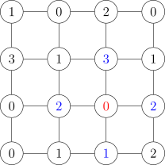
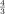

Complex systems are interdisciplinary: you have to communicate your results to experts from different science field. You need to provide an easy answer to a complex problem, no matter how difficult it’s to get this answer.
One of the main ideas in complex systems is emergence. Emergence means that the structure
of the particles is simple and they are not so important like interactions bettween them.
An example of this is the Central limit theorem, which comes from mathematics.
If you have a random variable xk, with average value = 0 and finite variance σ2,
then the central limit theorem says that, if the variables are independent (and in
physics this is usally a fair assumption) for every value of k, then the normalized
sum
then the distribution of this variable zn is known, and it is gaussian, for a big enough value of N.
Despite the fact that we, as humans, need a cause-effect relationship to describe a
phenomenon, nature loves independent events, like DNA mutations. The gaussian describes
the fluctuations of a system at equilibrium, not the complexity. You cannot extract work
from fluctuations at equilibrium, otherwise you violate thermodynamics (and that’s no good).
The gaussian function is not a physical function, because it implies non zero probabilities to
events which are impossible. For example, if we take a particle in a basin of attraction of a
potential, the non zero probability given by the gaussian fluctuations allows the
particle to jump out of the pit. But this violates the second law of thermodynamics.
A way to defy the gaussian properties is to allow a system to have memory, so to remove the
independence of the variable.
One example of this is the sand pile model. You have a lattice, and each point is connected to its four neighbors. At this point one particle is put in a randomly chosen point. Each node can have four possible states, 0, 1, 2, 3, that is four possible numbers of particles. If a node reaches 4 particles, the 4 particles are distributed to the 4 neightbouring nodes.

For the nodes in the border, what happens is that 2 of the particles are redistributed and the
other 2 are released in the enviroment, so they are lost.
So this system has memory, and this means that the states of all the nodes are not
independent. This memory turns the gaussian distribution into a power law
with α > 1.
The decay of the power low is much slower than that of the gaussian, which means that the
probability to have events in the extremes is significantly higher with the power low
distribution. Memory is related to power laws, but vice versa is not guaranteed. We can also
have power laws in physics, for example in the Ising model. In physics, power laws
typically represent a phase transition for a dynamic system in a non-equilibrium state.
In the sand pile model, we notice a self-organized criticality: the system naturally goes into a
critical state and does a phase transition.
Another example of a natural power law is the Kleiber law which relates the metabolic rate
(amount of energy you need to survive) to the mass.
| (1.1) |
We can also observe that heartbeat rate decreases with mass and lifetime increases.
Let’s take a region of space containing a number N of nodes. This system can represent, for
example, the hydraulic network of a city. For a node we define its “energy” flow φ (in the
case of the hydraulic network, what is flowing between the nodes is water). How much
“energy” do we need to insert in the system?
If we have to distribute something to all the nodes, the most basic way to do it is to connect
one on one all the nodes, as to form a long chain.
If the flow out of the source S is ϕ, the flow after the first node is ϕ - φ, and so on, and we
expect that the flow arriving to the final node will be φ.
So the total energy is
So the totaly energy that is required to provide for all the nodes, with this configuration,
is proportional to the square of the total number of nodes. So with this configuration we
have a network that is very easy to implement, but the network is very inefficient.
Another possible connection of the nodes is the following one:
So each node is linked to two mode nodes. This is what is called a tree structure.
The main problem with such a structure is that the path between the nodes is always the
same, but it is impossible to design a city in such a way.
The number of nodes is N = 2m+1, where m is the number of levels.
The relation for the flow in each level is
where we assume again that the flow in the final level is φ.
ϕk then is

Then:
This configuration is much more efficient than the previous alternative, although it is
impossible to put to practice.
So we need to find a solution that is in the middle of these two.
Another possible structure consists of connecting all the nodes to the source, making a star
network: also this model is of course impossible to put in practice.
However, in this case the total energy required is proportional to NL, where L is the scale
length of the system.
The proportionality to L is due to the fact that the average length of the links is
proportional to the size of the space.
Since
where D is the system dimension (e.g. 1D, 2D...). We have that
We notice that:
for a 2D system, like a city, E ∝ V
for a 3D system, like biological systems, E ∝ V 
In any case the exponent is greater than one so, soon or later, the system will collapse. The
problem is also logistic, because in a real transportation line there is also waste, that has to
be disposed of.
If we consider our system to be an animal’s body, this would mean that in order to survive
the amount of blood in its body must grow with the size by an amount of 4∕3. This would
mean that very big animals can’t survive, but they do, and the solution is in Kleiber’s law.
As animals get bigger, their demand of energy goes down, so their metabolism slows
down.
Once we have a model (which hopefully is a good one), the model is deterministic, so if we
know the initial conditions os the system, we know exactly what state the system will have at
any future time.
The problem with this is that we don’t know the initial conditions with absolute certainty. So
at this point the question, that will be answered later, is:
How much error in the initial conditions is acceptable before that the previsions of our model
start to diverge from the real evolution in an unacceptable way?
Let’s consider the portion [0, 1] of the axis, which represents a segment (a stick) of length 1.
Suppose that we extract randomically a point x1 on that segment, and we cut
it in correspondence of that point, thus obtaining the portion [0,x1] of the axis.
By repeating this process many times, we obtain a system with memory, because of course
the length of the segment at a certain iteration depends on all the previous iterations.
This is called the broken stick model.
For this system one expects to have a power law distribution, because if we rescale the
variable x, the distribution must not change.
Since we have:
Which means that, as N goes to infinity we get
Let’s now try to implement the system without memory. So we have N independent
variables xk uniformly distributed, and for each variable we define its distance from the
previous one, Δx.
The probability to find Δx is the probability of not finding x in any segment, so
We then take a new variable y = NΔx and we obtain the probability distribution
as N goes to infinity, which of course is an exponential law.
Suppose that the whole stick is a state, and we want to distribute the population inside of it.
If we divide the stick uniformly in portions and diivde the populations in this group, we
obtain an exponential law, as we have just seen.
Another way, which contains memory, consists of creating a city and letting it grow, and only
then introducing a second one, and repeating the process until all the space is
occupied.
A ranking is an ordered subset of measures of the same quantity, between which exists an
order relation. Rankings allow us to obtain complex informations with the use
of very little data, since the information is contained in the order of the values.
An example of the use of rankings can be found in web pages, where the search engine shows
to the user the results of the search, and the results are ordered depending on their
relevance, so to allow them to find the desired information as quickly as possible.
In this example, the quantity is the relevance of a result to the search.
Another example is the population of cities. The graph below shows the population of the 300
bigges cities in Europe. The graph is in log-log scale, and since it shows a straight line, it
means that the distribution is a power law distribution.
This can be explained considering the fact that, storically, the population used to
migrate towards the biggest cities of the country, because there were more job
opportunities. Thus one can say that big cities have a preferential attatchment.
Let x be a random variable and {x1,x2,...,xN} a sample of experimental observations of the
variable, ordered in such a way that x1 ≥ x2 ≥ . . . ≥ xN.
Then, the ranking distribution is created by assigning to the position j in the order the
corresponding value in the sampe, which is given by the map xj = f(j). Also, usually the
elements are normalized like yj = xj∕x1.
By definition, j∕N is the frequency of the event {x | x ≥ xj}, that is, the probability that
the variable x has a value larger that xj for larger values of j.
The cumulative distribution is defined as F(x) = P{u | u ≤ xj}, that is, the probability that
the value u is smaller that x. Of course, this probability is equal to the integral of the
distribution in the range [-∞,x].
The relation between the frequency j∕N and the cumulative distribution is given
by:
where J(xj) is the inverse of the ranking, so it’s the function that returns the position of a
certain value of x in the sample’s order.
Since the cumulative distribution is the integral of the probability distribution, the latter can
be obtained by differentiating the first:

Let’s suppose that we are tossing a coin, and the probability of gettin head is p and the
probability of getting tails is 1 - p. The event E is xn+1 outcome, and Hn is {x1,x2,...}, so
the first is the future and the second is the past.
Now we ask ourselves what is the probability that the next result of the toss is going to be
heads:
The most intuitive way to calculate this probability would be to use the frequentistic definition, so to count how many times we have gotten heads over the entire number of tries (we are considering the number of tries to be very big of course)
Unfortunately, this is not the right way to do it.
The probability of getting a given sequence of heads and tails is
where J is the number of times that we get heads.
Now if we integrate we get
so
which is a binomial distribution.
Now we calculate the average value of the probability
and we see that it isn’t J∕n, as one would have expected.
The most simple model possible is the linear model
Albeit this model is easy, there are a few complications that have to be taken into account:
When the number of dimensions increases it becomes complicated.
If we consider the determinant
we obtain a polinomial equation, that can be very hard to solve.
To further complicate things, A might not be known, but we could have an ensemble of matrices.
The point x = 0 is always a critical point, so we can always linearize the system around this point, but if A has critical points then we get those as well.
By solving the determinant equation, we get the eigenvalues λ, whose study can tell a lot about
the behaviour of the solutions.
If Reλ ≤ 0, this means that the exponential term of the solution shrinks, so it converges.
Robustness means that if we perturb the system, the solutions don’t change too much. A
model must be robust, otherwise it can fit any kind of data simply by slightly changing the
parameters.
The formal way to write the solution of such a linear system is
For coefficients λ* such that Reλ* > 0, we have that
This is very tipical, and from this rises the chaos theory. In this case, even a small
error in the initial condition will increase the error in the model exponentially fast.
We get another interesting model by adding some noise to the linear model
We consider a special solution of the form
and we substitute in the equation
So the complete solution of the problem is
| (2.1) |
If the system is stable (negative real part of lambda) and we use a periodic forcing, the
solution is still a periodic function with different period.
Now we want to consider the case of a perturbed matrix:
with ε ≪ 1.
The solution is
and to understand the system’s sensitivity we calculate the derivative for small perturbations
but the problem is that usually the two matrices are not commutative.
If we take the special solution x = exp(At)x0 and we substitute we get
and, if A and B do not commute, this equation is very difficult to solve.
An approximate solution is
and the solution for x is
| (2.2) |
Now, the sensitivity of the system is
In the particular case where the matrix is diagonal, the sensitivity becomes
In this model we have two variables, x and w, and two differential equations to describe their dynamics

This system is of course not linear, because we have a cubic term in the dynamics of x.
We require μ to be big, so that w is the slow variable, whereas x is the fast variable.
The fact that the two variables have different growth speeds is quite important, because it
allows us to study them separately, and this reduces the complexity of the system.
The difference in the speed of the variables makes the system stiff, which means that it’s very
hard to integrate numberically.
The key to studying this system is in the nullcline. We find the two nullclines by putting the
two derivatives equal to zero, so one is a straight line and the other one is a cubic.
The two nullclines intersect, and the point where they intersect is the equilibrium point of the
system. Furthermore, the cubic nullcline has two critical points. Since x is the fast variable,
the point follows the cubic nullcline in its dynamics. Once it reaches one of the two critical
points, during its motion, it jumps to the other branch of the nullcline. So in the end one gets
a periodic motion.
Suppose now that I(t) is of the form
so we give an impulse to the point.
What happens now is that, if ΔI is small, the point oscillates briefly around the critical point
and falls back into it, but if the the impulse is big, the point excapes and makes a very big
oscillation.
In this system we have an Hopf bifurcation.
Sometimes the orbits of a dynamical system converge not in a single point but in
limit circle near the stable point. This is called Hopf Bifurcation. That type of
phenomena is recurrent in nature: one example may be the Ising’s model in which the
system passes from a one stable point state to a two stable points state with a
phase transition. In that specific case we observe a bifurcation of the system’s free
energy.
We have to see the Hopf bifurcation as a new dynamical state that has a periodic orbit as a
solution. However, it’s important to observe that a Hopf bifurcation is not an equilibrium
state for the system.
For example, consider a circular network of identical neurons characterized by a function ẋk.
The dynamic is described by a simple law
in which the function F() is taken from the Fitzhug-Nagumo model and the other term
represents the system dynamic.
If xP is an equilibrium point for all neurons then we can verify that exists an ϵ = ϵC that
produces a non-trivial solution. In particular, with that value of ϵ we can create a
stationary periodic state with a periodic signal (moving wave): that’s a self-solution
for the system. Obviously, this example do not conserve the total energy of the
system.
A dynamical system is given by a phase space M ⊆ℝd endowed with a collection of maps ϕt : M → M, where t ∈G = , with the so-called “group property”:

The maps ϕt are usually called flows.
This formalization works for systems whose equations don’t depend explicitly on time.
A typical example of a dynamical system is that of the solutions of a differential equation. So
if we have a Cauchy problem
where the flow is the function that takes the initial condition and returns the correct solution for the differential equation. So if this ODE has a global solution x(t) that satisfies the initial condition, then
We must also assume the uniqueness of the solution, that is, for one initial condition we
only have one solution.
Non-autonomous ODEs, where the equation field depends on time
can be converted into autonomous ODEs in higher dimensions, going back to the previous
simpler case.
We consider M = M ×ℝ with y = (x,t) ∈M, and we define
with f : M ×ℝ →ℝd and F : M × R = M →ℝd+1. At this point we can write the new differential equation:
with initial condition y(0) = (x0, 0). For this to be useful, we must show that knowing the
solution to this new equation implies knowing the solution for the original one.
Say y(t) = (x(s),t(s)) is a solution for the new equation
with initial conditions x(0) = x0 and t(0) = 0. For what concerns t, it’s the identity function, so t(s) = s, which means that I can invert t and s, so going back to the first equation we have

which was our original equation. This means that a solution for the non-autonomous
equation is also a solution for the new autonomous one.
So, if we have a theory that treats non-autonomous systems, that theory must also be able to
treat autonomous systems.
If the t variable is a natural number, we call it n
Let’s take the expression
where xn represents the population in year n. For α > 1, we have population growth and
for α < 1 the population decreases.
If at time t = 0 the population is x0, at a given time we have
This model takes into account the fact that the higher the population is, the more resources are needed, so there should be a limit that can’t be surpassed, because the environment wouldn’t be able to sustain it
Now we change variable, defining y = x∕A, and we get
which is the logistic map:
| (3.1) |
We take 0 < x < 1 and 1 < r < 4. The graph is a parabola upside down, with the maximum at . It may happen that T n = x: in this case the orbit O = x∈G is called periodic orbit. We also observe that getting closer to an orbit is not the same as getting closer to a limit.
Now let’s see an example of a chaotic map. First of all, we define a map T as expanding if
> 1 ∀x ∈ . As well, we also give this definition for a generic point:
. As well, we also give this definition for a generic point:
Definition 1. We define a periodic point of the map x0 ∈as:
attractive if > 1
repelling if < 1
neutral if  = 0
= 0
For example, let’s take the map T : → such as T = 2x mod 1. This map as two fixed points (intersection with the bisectrice): p0 = and p1 = . We notice immediately that those points are both repelling points. Another thing we can see with this particular map is that if we start on a slightly different point from the previous one, for example x → x + ϵ, the difference between the two orbit grows exponentially fast:
where
and in conclusion we have that
so the difference grows ∝ 2nϵ. One last comment to make is that it’s true that the two orbit exponentially diverges one from the other but the phase space is limited: from this point of view their distance in phase space will oscillate through time.
Proposition 1. If T : → is an expanding map such as > 1 ∀x ∈ then any point p of Tj (j ∈ℤ) is repelling.
Proof. If we take the derivative of Tj we get
and if now we calculate the module of this derivative we get
where, since the map is expanding, each term of the product is larger then one. __
Proposition 2. If two points p and q are part of the same periodic orbit then they are both of the same type.
Proof. Let’s consider an orbit of period j with q = Tk, 0 < k ≤ j - 1.
Real numbers always commute, so it’s obvious that
We have just shown that the property of a point (local) is also a property of an orbit (global).
Let π1 be a one-dimensional thorus (a circle). We define the transformations
which are called rotations by an “angle” α.
Now, if α = p∕q, with gcd(p,q) = 1, then:
all orbits are periodic with fundamental period q.
if α is not rational, then all orbits are dense.
Proof.
We consider that Rαn(x) = x is equivalent to (x + nα) mod 1 = x, so
which means that,
and for n to be an integer, p needs to be simplified, but it can’t be simplified with q, so it simplifies with k, which is then equal to k = mp. So in the end we get
In order to prove that all orbits are dense, we prove that they are ε - dense for
all ε.
Since α is not rational, the orbit must be infinite, because it is not periodic. Then,
we can say that there is at least one accumulation point in the orbit.
Now, call j = n - m, then we can say that {Rαkj}
k is ε - dense in π1, which
means that the orbit is dense.
Definition 2. A dynamical system (M,ϕt) is called topologically transitive (or just transitive) if exists x ∈ M such that the future orbit
is dense.
So a transitive system is a system that has at least one dense orbit. Going in that direction, if all the orbits are dense we say that the system is minimal.
Another very important definition is that of an invariant subset:
Definition 4. A subset A ⊆ M is called invariant if ϕ-t(A) = A for every t.
Note that if ϕt is invertible, this statement is equivalent to saying that ϕt(A) = A for
every t.
Finding invariant subsets is important because we know that if we have an initial
condition in that region, the orbit is going to stay in there. Of course, this doesn’t give us the
trajectory, but it helps us by restricting the phase space.
A function f : M → R (observable) is called invariant if f ∘ ϕt = f for every t ≥ 0. This is
what is called in mechanics a prime integral of motion.
Suppose f = 1a, where 1a(x) = 1 if x ∈ A and 1a(x) = 0 if xA. Then we have
that
but also
So combining the two we get that
Proposition 3. If a dynamical system is topologically transitive, there exists no continuous invariant observables other than constant functions.
Proof. Say that Ot(x
0) is dense. Now, taking any y ∈ M, we can say that exists a
sequence xj = ϕtj(x
0) such that xj-→y.
Now, suppose that a function f is continuous, then
and suppose that f is invariant, so that
Since we have taken f to be continuous, f(xj) must converge to f(y), but since it is constant and equal to C, it can only converge to C, which means that

which is a constant function. __
Now we try to generalize rotations of the circle to translations of a d-thorus.
We define the translation on a d-thorus Tγ as:
Definition 5. A collection of real numbers {λ1,λ2,...} is said to be rationally independent if none of them can be written as a combination of the others with rational coefficients.
Now that we have defined the concept of rational dependence, we can use it to introduce a characteristic of the translations on d-thori in the case where the vector components are rationally independent:
Proposition 4. Given a translation on a d-thorus Tγ, it is minimal if and only if {1,γ1,γ2,...}are rationally independent.
In this case, topological transitivity (so the fact that the system hase one dense orbit) is
equivalent to minimality (so all the system’s orbits are dense).
This is due to the fact that translations commute. In fact, if we define a translation of the
initial point x0
then we see that translating the orbit of Tγ starting from x0 gives an orbit which is identical to the orbit starting from x:
which means that the translated orbit is dense if and only if the initial one is dense, so
translating a dense set we get another dense set.
So we only need to show topological transitivity, instead of minimality. Let’s show that
topological transitivity implies rational independence: By contradiction, suppose that
1,γ1,γ2,... are not rationally independent, which means that exists a set k1,k2,..., where ki
are not all zero, such that

We then define the function f(x) = e2πi, which is continuous and non constant, because not all ki are zero (so you have at least one xi in the exponent). Now we just need to show that f is invariant. To do this we calculate f(Tγ(x)):
and this holds for every x in the thorus.
Let’s take a system on a ring, and the dynamics represents rotations on this ring. We can
imagine this as a cave tube filled with fluid (marmellade). In this case, the motion of the fluid
will be laminar.
In discrete time, we take a surface with codimension 1, which is intersects the trajectory in a
point x, and we want to find after how many iterations the trajectory intersects the surface
again, so in other words, how long it’s going to take for the trajectory to intersect the surface
again.
A Poincarre section of a continuous dynamical system is a codimension 1 submanifold such
that all trajectories cross it transversally (more or less).
In this case, the so called Poincarre map, also known as first return map, is defined as
follows:
where tM0 is the return time to M0.
Continuous time dynamical system, the Kronecker flow.
given by the solutions of the ODE
In this case it’s very easy to find the flux, which is simply
In general terms, suppose that ω = (ω1,ω2,...,ωd) with ωd > 0. Then the bottom side of the thorus M0 is
and we know that all trajectories must cross this subspace.
The first return map is
This is the same as
with γ = (ω1∕ωd,ω2∕ωd,...).
Now we ask ourselves, when are the orbits of Tγ dense? The answer is that they are when
γ1,γ2,...,γd-1, 1 are rationally independent. But this condition is met if and only if ω1,...,ωd
are rationally independent.
This means that the trajectories of ϕt are dense if and only if ω
1,...,ωd are rationally
independent.
We can think of this map as either a map that goes from [0, 1] to itself, or as a map on a thorus. Alternatively it can be written as
If we consider it as a map on a thorus, it is quite easy to see that this map is continuous.
As we have seen, this map is chaotic. To understand, if we consider two points x1
and x2, positioned at a distance ε, their distance after one iteration becomes 4ε.
We understand that after a number of iterations these two points diverge pretty quickly,
no matter how small we take ε to be.
We write x as x = 0.d1d2d3, where di are the digits. It can be written as
We define the map T(x) as
Definition 6. A topological dynamical system (a system for which we care about topological properties) is said to be topologically mixing if ∀U,V non-empty open sets, ∃N = N(U,V ) ∈ N such that
for all t.
Proposition 5. (M,ϕt) is topologically transitive if and only if ∀U,V non-empty open sets ∃N = N(U,V ) so that ϕN(U) ∩ V ≠∅.
A corollary of this proposotion is that topological mixing implies topologically transitive.
We want to show that this map is topologically mixing. We know that a set, which is the arc
connecting two points, expands in length after each iteration, and after a certain point it will
fill the whole circle, and at that point it will keep being the whole circle, and in
that case it’s obvious that the intersection is not null. So we just need to prove
that after a certain number of iteration the expanded set will fill the whole circle.
The function after n iterations is
For any n
Since U is open, exists an n with 0 < k < 2n - 1 such that ) ⊂ U
The number of periodic points of period n of this map are 2n - 1.
where A is the matrix
If we look how the points (1, 0) and (0, 1) transform, we see that they go to 2, 1 and (1, 1).
This map preserves the Lebesgue measure μ
If the system is bijective, this is the same as saying
so we can go forward in time. We know that the measure is preserved because det A = 1.
We study the eingenvalues and eigenvectors of this matrix. These are λ1 = λ =
and λ2 = λ-1 = , with corresponding eigenvectors (1,) and (1,-).
The two eigenvectors represent the directions of maximum expansion and of maximum
contraction.
If we take a point on the expanding eigenvector, its orbit diverges from the origin, whereas
for a point on the contracting eigenvector the orbit is attracted to the origin. If we take a
point which is a linear combination of the two directions, after each iteration the point
gets closer and closer to the expanding eigenvector, because the component along
the contracting eigenvector gets smaller after each iteration, and eventually it will
disappear.
This map is an example of an ”hyperbolic dynamical system”. Let’s call
where x are constants, an unstable manifold. Then we can define the stable manifold as
Why do we expect systems like this to have a lot of periodic orbits? Because of the
stretching and folding mechanism. To see this, let’s consider an hyperbolic rectangle, which is
made up of pieces of stable manifolds in some points and unstable manifolds in other points.
Now, we apply our dynamics to it, so the unstable manifolds will stretch and the stable ones
will contract.
So if we have the rectangle R and the transformed rectangle R′ = T(R), R′ will cross R ad
some point, with the condition that we can’t have unstable manifolds crossing other
unstable manifolds. Once we have found the intersection of the original rectangle
and the transformed rectangle, we have found a fixed point of the transormation,
hence we have found a periodic point, which implies the existence of a periodic
orbit.
Ergodic theory is the study of dynamical systems from the point of view of measure theory,
hence of probability.
One first measure comes from analytical mechanics. We consider a measure space M, and in
this space we have an energetic hypersurface. Then we define the Liouville measure
as
where dσ is the measure of an infinitesimal portion of the hypersurface and ∇H is the
gradient of the hamiltonian of the system.
We can derive the expression for the Liouville measure by considering the hypersurface with a
bit of thickness in the direction of the gradient, forming in this way a volume A,
and of course the system’s dynamics is going to conserve the Lebesgue measure of
A
If we then move in the direction of the gradient by a quantity h, we increase the energy by a quantity
Then the conservation of the Lebesgue measure implies that
so we are not only on the same energy surface, we are in the same energy shell. We can write this as

and we can simplify the delta, so
and we have thus obtained the expression for the Liouville measure.
In ergodic theory we consider the space, along with the measure and the systems flux,
(M,μ,ϕt), or in discrete time (M,μ,T).
The first thing that we could ask ourselves is the probability that ϕt ∈ A. So now we don’t
consider a single trajectory but all the possible trajectories, and want to find the probability
that they are contained in a certain portion of space. This probability is equal
to
A this point we can define the concept of a measure preserved by the dynamics
Definition 7. A measure is preserved by the dynamics if
where A must be measurable, so it must belong the the σ-algebra of the space.
From now on we restrict to measures that preserve the dynamics, which are also called
invariant measures.
An example of a measure preserving dynamical system is the doubling map. To see this, if we
take the counter image of a set A, this is equal to the union of two sets A1 and A2, which are
measurable. In this case it is important to consider the counter image of the set, because the
image wouldn’t preserve the set
When the two are equal, we have forward preservation.
An observable is any function of the phase space, f : M → R, that represents any quantity of
the system that can be observed and measured, thus giving us information about the system.
An observable could the the temperature in a room, the moment of a particle or anything
really.
We notice that this is equivalent to the definition that we had before, but in the study of
dynamical systems we asked for the relation to hold for every value of x, but we
can’t do this in ergodic theory, because not all the points in the space are seen
by the measure. In ergodic theory we say that a relation holds if it holds almost
everywhere, that is, if it doesn’t hold only on subsets of the space that have zero measure.
We also define the concept of an invariant set.
We then define push-forward measures:
The measure contains the counter image because we are considering the points at an
initial time and this allows us to require that they will be in the set at forward times. We can
say, in probability terms, that the probability of being in A at time t is the same as the
probability of being in A at previous times.
Now we can note that a measure μ is preserved by the dynamics if an only if
Now, if ϕt * μ → ν, then ν is called an equilibrium measure.
Given an observable f : M → M we define the Birkhoff (time) average as
The Birkhoff theorem states that:
Proposition 7. Given a measure preserving dynamical system (M,μ,T) with μ(M) = 1, if f ∈ L1(M,μ), then
the limit f* exists almost everywhere
Definition 11. A measure preserving dynamical system is ergodic if and only if for every f ∈ L1 exists c such that f*(x) = c for almost all values of x.
Proposition 8. The following statements are equivalent:
∀f ∈ L1, f* = const
∀f ∈ L1, f* = ∫ fdμ
if f ∈ L1 is invariant, then it is constant
if A ⊆ M, which we take to be measurable, is invariant, the measure is μ(A) ∈ {0, 1}
Proof.
(1) implies (2) because, if f* is constant, by Birkhoff’s theorem it’s integral is equal to the integral of f. Since f* is constant, we can take is cout of the integral, and

because μ is a probability measure. So
(2) implies (3) because, if we take f invariant, so f ∘ T = f, we can also say that f ∘ Tk = f for every k, which means that it is invariant at all times. This means that in calculating f* we are summing f a number of times and then dividing by that number, so it remains f. But if f* = f, by (2) we have that
which assures that f is a constant.
(3) implies (4) because, if we apply (3) to f = 1A ∈ L1, knowing that T-1A = A mod μ it’s true that 1fA-1 = 1A μ-a.e. 1fA-1 = 1 ∘ T, so by (c) 1A is constant μ-a.e. So if 1A = 0, A = ∅ mod μ then μ(A) = 0, or if 1A = 1, A = M mod μ then μ(A) = 1
(4) implies (1) because, if we claim that a function f : M → R is constant almost everywhere only if exists a constant l such that μ({x ∈ M|f(x) ≤ l}) ∈ (0, 1), this set is increasing as we increase l. Now, if l goes to -∞ the measure goes to 0, and if l goes to ∞, the measure goes to 1. The function can only jump in going from 0 to 1, but it can’t do it all in one jump, so it must be constant except on the jumps.
Imagine that we have many dynamical system, each one with its internal dynamics, each described by a differential equation
We suppose to have some directional coupling between this system. This coupling means that in the differential equations we will have an additional term:

This is a network structure, because we have the nodes (the systems) and the links. In order to study this kind of system we must introduce a boundary condition. There are two possible boundary conditions:
We take a source and we see how the source influences the system
We attatch the tail of the chain with its head. In this way, the system can be treated as a closed system
We can take as an example the case of vehicles. For vehicles we have two dynamical variables, position xk and velocity vk. The cars have an optimal velocity, we have the equation
which gives a logistic function. Another possibility is
To describe the system we can have the system of differential equations:
where the variable γ represents the time in which we are able to react and change our
velocity.
To characterize the system we expect first of all to have
We define the variables wk and zk as
We have the condition that
which is obvious, because we are summing the distances of each car with the next one. We
have an equilibrium condition, which is weq = L∕N.
What happens if we then perturbe the system? So we have the equilibrium value for wk plus
a perturbative term
We can then use the fourier transform and get
where the dependence on k is required by the closed system boundary condition.
If Re λ ≤ 0, the system is stable, and if Re λ > 0, the system is unstable. If we the put λ and
divide it in real and immaginary part, we find
We can find that the system is unstable if
We want to find a function F so that
where τ is not known. We also wuant a function G
We then get the equations
This are called delay differential equations.
The vehicles are described by two variables, dk and wk. dk is the distance between two consecutive cars and wk is
For this system we have the system of equations:
If, instead of a chain, we had a network, where each node is connected to more than one
node, then in the second differential equation the number of elements would increase
accordingly.
We then introduce a new variable uk = vopt(dk), for which we have the equations
If we take the case where all the cars are moving at the same speed, so wk = 0, then we
also have uk+1 = uk; so when all the vechicles have the same speed, that must be the optimal
speed.
We not express the variables in terms of two functions F and G:
so that the equations become
The point is that we move from having N degrees of freedom to only having 2, plus a
delay. It is useful to use this types of delay differential equations for systems with a lot of
degrees of freedom. What this is saying is that, if we know the values of the functions in the
time interval of width τ, then we can use this knowledge to get the evolution at subsequent
times.
We can express this through integrals
Very often in models we need to introduce a delay in the evolution, so we get this kind of
equaitons. For example, in the study of an epidemic we need to consider that some time must
pass between the encounter of an healthy person with a sick one and the time when the first
person gets sick as well. Also in the physiological responses of the immunitary system we
have that the body doesn’t start fighting infections immediately, so we need to introduce a
delay. So delay differential equations are very useful, but they are often hard to study.
Is it possible to study the stability of the stationary solution? uk = F* and w
k = 0
Insert
and see in which conditions you get Re λ > 0.
If we differentiate we get
where we neglect the last term, perche’ si.
If τ is small we can write
which means that in the previous equation we get
where we recognize the second term to be a total derivative with respect to time, which
means that we can integrate.
We redefine F as
where H represents a wave function, and ν is the wave function.
The equation now becomes
where d0 is the average distance between vehicles.
For the optimal velocity we can have a funcion of the form
and this is the prototype of any sigmoidal function. If we derive the hyperbolic tangent we get
which is the most symple non linearity that we can introduce in the system.
So going back to the equation we have
If we define P = H′, and put -β∕ν = 1, we have
Let’s take an oscillator described by the set of equations:
The summation represents friction, and we impose two conditions for Lkj:
The combination of this two conditions means that the only positive terms are on the
diagonal, and the sum of all the terms on the diagonal must be equal to the sum of all the
other terms. Matrices like this are called laplacian matrices. The form of this matrix means
that there is an oscillation.
For this matrix we are assured to have one null eigenvalue, because if we take the
vector v = (1,..., 1), the fact that the sum of all the elements must be equal to zero
assures that applying the vector to the matrix gives zero, thus the eigenvalue is zero.
Why does this kind of matrix appear?
In the most basic interaction network, the nodes are linked to others and the link value can
be 1, if there is a link, or 0, if there isn’t a link. This connections are described by the
connectivity matrix, also called adjacency matrix, Ajk.
The degree of a node, dk, is the number of link that the node makes:
The degree of the nodes can be distributed in different ways, like as a poissonian or a power law. In the latter case, the network is called scale-free:
The laplacian matrix L is given by the relation:
where D is the degree matrix, which contains the degree vector on the diagonal
and has zeroes everywhere else. The minus sign is needed because of the condition
that the elements outside the diagonal, in a laplacian matrix, must be negative.
Now we ask ourselves, for this kind of systems, where we have a certain number of
oscillators, does exist a solution where all the oscillators are in phase, i.e. sincronized?
This system is not hamiltonian, because we have dissipation, but it is linear. If we consider a
generic linear system of the form:
we know that the solution has an equilibrium limit, z. We expect then that z has null eigenvalue
and we also expect all the eigenvalues of A to be negative.
If, in particular, we consider a system of the form:
we can introduce a function H(x), where we require that
This functions are called Ljiapounov functions. With this functions we can
describe the evolution of the system and its decrease towards equilibrium with
just one function. So even if the system had many degrees of freedom, now it is a
one-dimensional system. This suggests that finding this functions is of great interest.
For example, in our system a good choice for the Ljiapounov function would be
If we don’t consider the interaction part, then each term is simply the hamiltonian of a single oscillator and the function is the sum of all the hamiltonians, and this is guaranteed to be conserved. This means that the non conservation comes entirely from the dissipation term, so we have
Now we take the laplacian matrix to be symmetric, and we then impose
which means that pj = p0 ∀j. Alternatively we can write
and
Originally, kuramoto model was:
We introduce some new variables

We then get